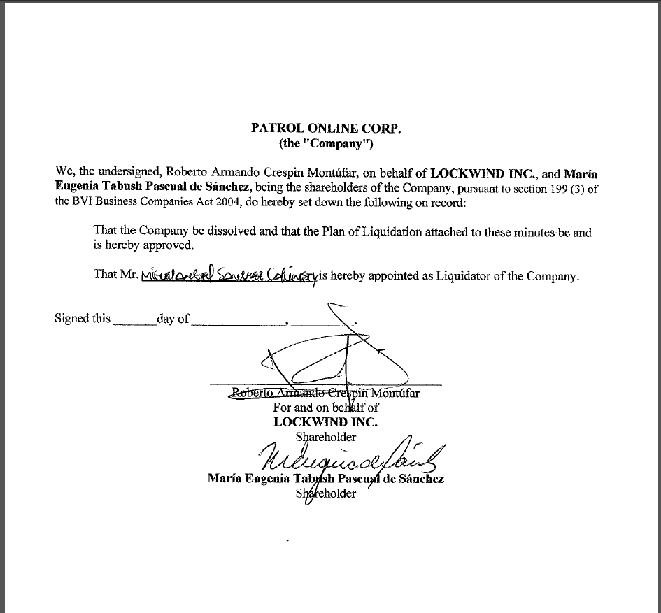

Transurbano: el proyecto que drenó millones del Estado
Por Suchit Chávez / 10 de marzo de 2019
El proyecto que buscaba solventar problemas de transporte en la ciudad de Guatemala se convirtió en el cuerno de
la fortuna donde empresarios del transporte, de seguridad y un excandidato presidencial metieron mano para
beneficio propio. El Ministerio Público los ha acusado por el mal uso de fondos originalmente destinados para la
compra de unidades de transporte, y la primera fase del área de seguridad. La segunda fase del proyecto en el
área de seguridad siguió la misma hoja de ruta que los ahora acusados.
El Transurbano es, por mucho, uno de los proyectos más onerosos emprendidos por el Estado durante la última
década, tanto por la millonaria inversión como por sus irregularidades. Dos de sus componentes principales están
cuestionados judicialmente en la actualidad: la adquisición de las unidades de transporte y la primera fase del
Proyecto de Seguridad planteado para su funcionamiento (2008-2011). La segunda fase de seguridad, aunque no es
cuestionada judicialmente, funcionó bajo la misma lógica: beneficiar con un megacontrato a una sola empresa
durante varios años, prorrogando el concurso.
Tres de las cinco licitaciones más caras en el área de seguridad de los últimos 15 años están relacionadas con
el proyecto Transurbano: dos para vigilancia con guardias de seguridad y una para videovigilancia. De estas,
solo una ha sido cuestionada por el Ministerio Público, y es la que involucra a la empresa Protección
Metropolitana, S.A.
El proyecto del Transurbano nació en 2008, cuando el objetivo era implementar un sistema prepago de autobuses.
La entidad encargada de ejecutar ese proyecto fue la Asociación de Empresarios de Autobuses Urbanos.
De acuerdo con las pesquisas presentadas por el Ministerio Público y la Comisión Internacional Contra la
Impunidad (Cicig), la primera fase del proyecto implicó comprar las unidades de transporte y aparatos necesarios
para poner en marcha el sistema prepago. El costo del proyecto fue de 270 millones de quetzales (unos 35
millones de dólares). Las pruebas reunidas hasta febrero de 2018 por los investigadores dan cuenta que la
Asociación de Empresarios de Autobuses Urbanos, en supuesta connivencia con empleados públicos, sobrevaloraron
insumos comprados (hubo 29 millones de quetzales supuestamente no reportados y maquinaria aún sin utilizar), 44
millones que no se utilizaron para los objetivos del proyecto, y diez millones que fueron a parar a manos
privadas. Aún faltaban por determinar qué ocurrió con otros 54 millones de quetzales, para mediados de 2018.
Según la Fiscalía y la Cicig, parte de los 81.9 millones de quetzales que la Asociación de Empresarios de
Autobuses Urbanos recibió para ejecutar el contrato de seguridad relacionado al Transurbano, también fue
desviada. Los investigadores acusaron al excandidato Manuel Baldizón de haber utilizado parte de esos fondos
para comprar un helicóptero.
La hipótesis del caso apunta que la Asociación de Empresarios de Autobuses Urbanos se sirvió de la
subcontratación para el desvío de fondos. La asociación contrató a la empresa de seguridad privada Protección
Metropolitana, S.A., la que a su vez subcontrató a otras empresas para cumplir con la cuota de dos mil agentes
prestando seguridad en paradas de buses y al interior de las unidades.
Sin embargo, los indicios apuntan a que los contratos fueron sobrevalorados y los “excedentes” desviados.
Imagen 1
Detalle del portal Guatecompras de los contratos recibidos por la empresa de seguridad Protección
Metropolitana,
S.A. Su mayor volumen de fondos fue entre los años 2008 y 2011, cuando fue contratista de la AEAU.
Entre 2012 y 2014, la Asociación de Empresarios de Autobuses Urbanos continuó con el proyecto de seguridad del
Transurbano bajo la misma lógica: dos mil agentes de seguridad privada, pero el proveedor beneficiado fue otro:
Protección Total, S.A. Al igual que su predecesora, esta empresa no había tenido un contrato tan grande. De
hecho, este es la única licitación que había conseguido con el Estado hasta ese momento.
Imagen 2
Detalle del histórico de contratos recibidos por la empresa Protección Total, S.A., según el portal
Guatecompras
a enero de 2019. Al igual que Protección Metropolitana, S.A., el mayor volumen de dinero fue
obtenido por el
contrato con la AEAU.
El contrato inicial entre la Asociación de Empresarios de Autobuses Urbanos y Protección Metropolitana, S.A. no
fue incorporado a la plataforma de Guatecompras, que es usada para participar en licitaciones. Las pesquisas
reseñan que la empresa supuestamente recibió 88.9 millones de quetzales en 2009; 64 millones en 2010; y 88
millones en 2011. En total: 240 millones de quetzales por servicios de seguridad privada.
Los contratos a favor de Protección Total, S.A. sumaron 256 millones de quetzales.
En 2011, primer año que ganó el contrato, solo hubo dos oferentes: Protección Total, S.A. y Protección
Metropolitana, S.A. Ambas presentaron ofertas por el mismo valor exacto: (48 millones de quetzales), y cada una
fue presentada con dos minutos de diferencia, según los documentos del contrato en el portal Guatecompras.
En la junta evaluadora del contrato participaron los militares retirados Roberto Antonio Robles Reyes y Edgar
Rolando Méndez Morales, ambos acusados por recibir sobornos en la fase dos del caso Transurbano. Ellos fueron
los encargados por parte de la asociación de decidir la mejor oferta. Según la hipótesis del Ministerio Público,
Robles Reyes y Méndez Morales beneficiaron a Protección Metropolitana, S.A. con el millonario contrato a cambio
de dádivas hasta de un millón de quetzales.
Protección Metropolitana se limitó a responder que «recordemos que la responsabilidad penal, es personal e
individual y la empresa como tal, no ha sido acusada, y el caso se está ventilando en los tribunales
competentes, quienes al final determinarán si hubo o no tal extremo».
La respuesta es parcialmente cierta: hasta el momento, la Fiscalía Especial Contra la Impunidad únicamente ha
acusado al representante legal de la empresa, Antonio Piche Ruiz, quien hasta julio de 2018 tenía cargo de
gerente general. El presidente del Consejo de Administración era, hasta la misma fecha, Juan Ramón Schaeffer
Cueva.
Las pesquisas de la Feci reseñan que otro socio de Protección Metropolitana, S.A., también sindicado, participó
desde el inicio del contrato, controlando los fondos que habían sido trasladados a la Asociación de Empresarios
de Autobuses Urbanos, para el proyecto de Seguridad del Transurbano. Según la fiscalía, Otto René Bernal Ovando,
diseñó el proyecto de seguridad para la asociación, antes de licitarse. Bernal Ovando tuvo cargo activo en
Protección Metropolitana, S.A. hasta febrero de 2005, y en 2015 fue secretario general del partido Corazón Nueva
Nación (CNN), satélite de Partido Libertad Democrática Renovada (Líder), quien tuvo a Baldizón como candidato
presidencial.
Imagen 4
Detalle de la recepción de ofertas para brindar seguridad privada recibidas por la AEAU en 2011,
cuando decidió
cambiar el millonario contrato del Transurbano y dárselo a Protección Total, S.A.
Entre 2012 y 2014, Robles Reyes se mantuvo en la junta evaluadora de ofertas, y fue uno de los encargados de
mantener el contrato con la misma empresa. Los otros ofertantes casi siempre planteaban costos similares a los
propuestos por Protección Total, S.A.
Protección Total, S.A. tuvo como gerente administrativo y administrador único a los militares Herber Alexander
Mejía Landaverry y Juan Carlos Mejía Argueta; sus cargos fueron cancelados en 2013 y 2015. Cuando se ejecutó el
contrato del Transurbano, el gerente de operaciones de esa empresa era Roberto Armando Crespín Montúfar, quien
permaneció en el cargo hasta 2015.
Crespín Montúfar apareció como accionista de la empresa offshore Patrol Online, Corp., fundada en Islas Vírgenes
Británicas a través de Lockwind Inc., según los Panamá Papers.
Imagen 5
Patrol Online Corp. fue disuelta en 2017 por sus accionistas, según documentos internos de Mossack
Fonseca.

Patrol Online Corp. fue fundada en 2012 y uno de sus directores fue la diputada María Eugenia Tabush Pascual
de Sánchez, del partido Viva. Uno de los accionistas originalmente era la empresa guatemalteca
Geoinformática, S.A. Los Panama Papers no dejan en claro en qué momento se incorporó Lockwind Inc. como
accionista, como aparece antes de su disolución. Lockwind también fue creada en 2012 y, desde ese momento,
Crespín Montúfar tuvo poder general con representación dentro de la empresa. Cuando
el caso fue publicado
por Plaza Pública, Crespín Montúfar rechazó dar más detalles al respecto, y la diputada Tabush
aseguró
desconocerlo.
Y si bien Protección Total, S.A. no ha sido acusada en el caso Transurbano, sus
oficinas fueron allanadas en
abril de 2018 por una posible defraudación tributaria por el ejercicio fiscal 2013, cuando tenía bajo su
cargo el contrato del Transurbano.
La Ley que Regula los Servicios de Seguridad Privada establece que una empresa de seguridad
puede
subcontratar únicamente a personas que gocen de autorización y licencia de operación por la Dirección.
Adolfo Paredes, presidente de la Gremial de Empresas de Seguridad, reveló en una entrevista en agosto de
2018 que Protección Total, S.A. subcontrató a su empresa Vigilancia e Investigaciones Privadas para poder
ejecutar el contrato del Transurbano. Hasta 2018 esa empresa no estaba certificada por la Dirección General
de Servicios de Seguridad Privada.
Según Paredes, Protección Total no tenía la capacidad de contratar dos mil agentes por lo que le apoyaron,
pero tuvieron problemas con el pago. «Yo fui como limosnero a cobrarle y me di una gritada con él; le dije
“yo ya no trabajo con ustedes, y me paga ya”. Y me pagó y ya no trabajé. Posteriormente, supe de muchos
amigos que les quedaron debiendo», contó.
¿Por qué subcontratar? Por una razón sencilla y formal: a octubre de 2018 solo cuatro empresas de seguridad
reconocidas legalmente tenían una planta de más de mil agentes oficialmente certificados: Wackenhut de
Guatemala S.A., Sistemas Integrados Guatemaltecos de Seguridad, S.A., Safari Seguridad S.A. y Grupo SIS,
S.A.
La Gremial de Empresas Privadas de Seguridad y la Cámara de Seguridad reconocen que casi todas las empresas
tienen agentes de seguridad trabajando como no certificados.
De ello se puede concluir que el contrato de vigilancia del Transurbano estaba destinado desde un inicio a
tener a varios contratistas, para cumplir con el objetivo de dos mil agentes resguardando la seguridad, y no
únicamente una sola empresa, como se hizo durante seis años.
En la primera fase del proyecto, una de las empresas subcontratadas por Protección Metropolitana, S.A. fue
Security Professional Systems, S.A., otra de las mayores contratistas del Estado en el área de seguridad y
vigilancia. La empresa también fue allanada cuando el caso inició.
Uno de los prófugos del caso, Luis Alfonso Gómez González, y presidente de la Asociación de Empresarios de
Autobuses Urbanos, fue capturado el pasado 3 de marzo.
Más millones
El tercer contrato de seguridad vinculado al Transurbano es el que fue conocido en su momento como «Paradas
Seguras», que buscaba la videovigilancia inicialmente a través de 490 cámaras y que fue creado en 2009.
Después de ese primer contrato hubo tres modificaciones y ampliaciones más.
Imagen 6
Dentro de los documentos publicados junto con las bases del proyecto, en febrero de 2010, que fue
adjudicado
bajo la modalidad de “contrato de excepción”, se detallaba parte de la ruta del Transurbano a cubrir
por el
sistema de videovigilancia, según los datos disponibles en Guatecompras.
De acuerdo a datos proveídos por el Ministerio de Finanzas, la empresa Internet Telecomunication Company de
Guatemala, S.A. obtuvo cuatro contratos relacionados a servicios de videovigilancia, dos de ellos están
claramente identificados como el proyecto «Paradas Seguras» desde 2010, y su respectivo centro de monitoreo
y, los otros dos, con un sistema de videovigilancia relacionado a escuelas públicas de 2009.
Internet Telecomunication fue beneficiada por un monto total de 288.5 millones de quetzales por el sistema
de videovigilancia. El contrato, de
acuerdo a una publicación de El Periódico, fue denunciado por la
Contraloría General de Cuentas en 2011 tras un análisis en el que supuestamente se determinó que esa empresa
no poseía capacidad económica para dar cumplimiento al contrato.
Según los documentos públicos del proyecto, Internet Telecomunication siguió siendo contratada para ampliar
el proyecto de monitoreo hasta 800 cámaras, con su respectivo centro de monitoreo.
Si se hace una sumatoria en bruto de los datos proporcionados por el Ministerio de Finanzas y otros
consignados en las investigaciones del Ministerio Público, el proyecto Transurbano, solo en aspectos de
seguridad, costó al Estado guatemalteco 784 millones de quetzales, casi tres veces el monto que se reclama a
los procesados de la Asociación de Empresarios de Autobuses Urbanos y exfuncionarios públicos como
dilapidado en la primera fase de la acusación.
El jefe de la Fiscalía Especial contra la Impunidad, Juan Francisco Sandoval, explicó que el caso fue
iniciado «cuando logramos comprobar lo que acusamos»: sin embargo, explica que la investigación continúa.
Asegura que no han podido ahondar en aspectos del contrato relacionados con el tema de la seguridad.
«Usted puede preguntar a la gente que ocupaba el Transurbano en ese momento, cuántos vigilantes habían»,
dice Sandoval quien duda que existieran dos mil vigilantes, y agrega que «el contrato no se cumplió».
El fiscal asegura que aún deben hacer análisis financieros para profundizar o descartar la participación más
directa de las empresas de seguridad.
Se buscó la posición de Protección Total e Internet Telecomunication, desde enero de 2019, pero hasta la
fecha de esta publicación no habían respondido.